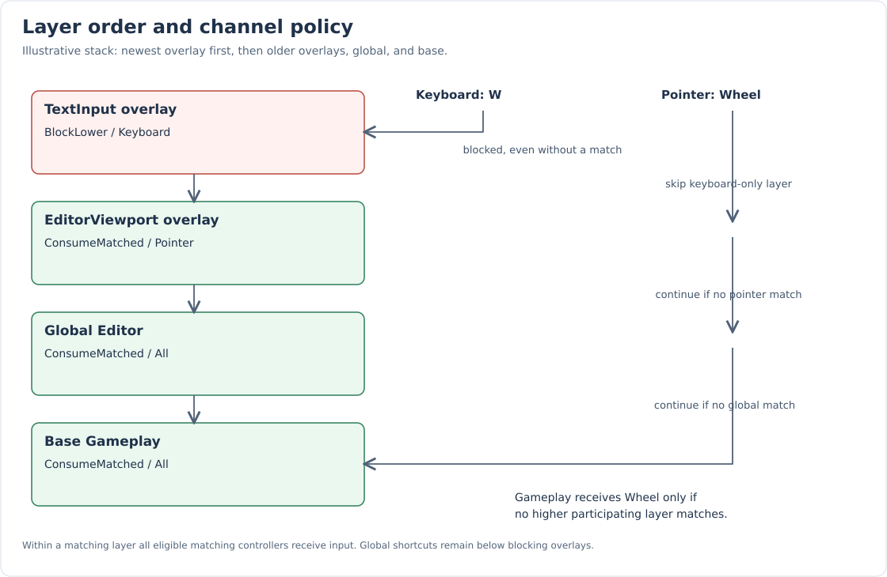
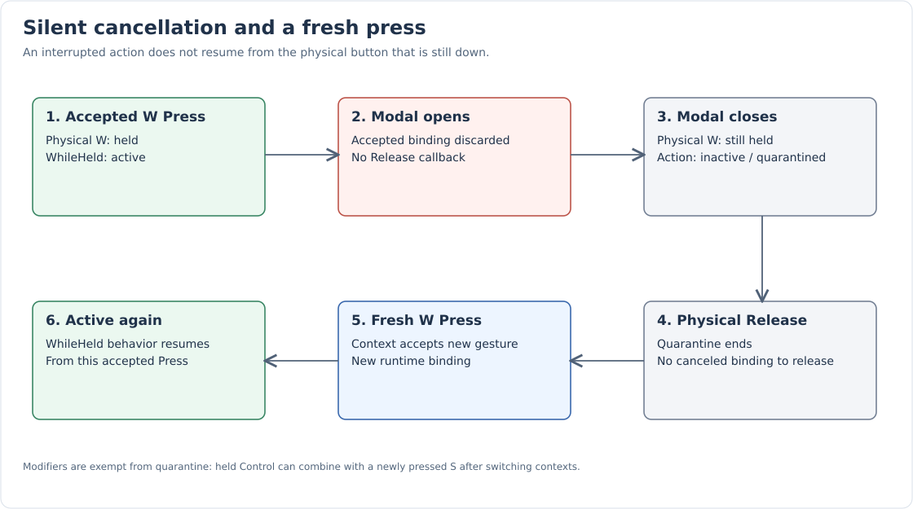
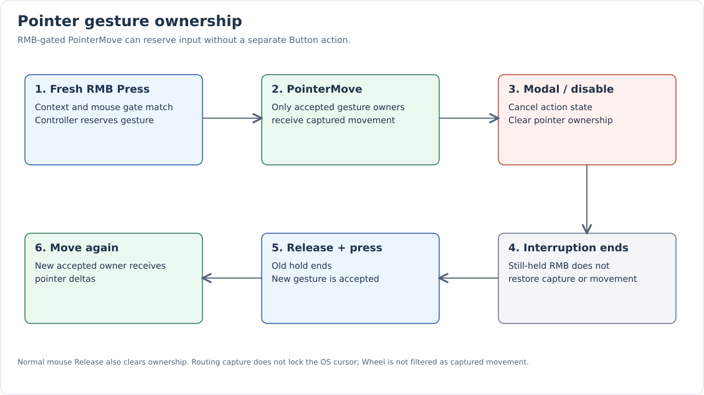

Contexts and Routing
Contexts separate commands sharing physical input. Temporary layers let modals and text fields block selected channels without rewriting controller maps. Context identity is independent of inheritance: a HumanController defaults to Gameplay and an EditorController to Editor, but their input-child contexts can change.
Context identity, channels, and policies
The enum contains Editor, Gameplay, EditorViewport, Modal, TextInput, and BindingCapture. New context identities require extending this enum; they are not arbitrary runtime strings.
Keyboard covers keyboard-triggered Button events. Pointer covers mouse buttons, PointerMove, and Wheel. All selects both.
enum class InputContextPolicy
{
ConsumeMatched,
BlockLower
};
struct InputContextLayer
{
InputContext context = InputContext::Editor;
InputContextPolicy policy = InputContextPolicy::ConsumeMatched;
InputChannel channels = InputChannel::All;
};| Policy | Matching input | Unmatched input |
|---|---|---|
ConsumeMatched |
Deliver to all eligible matching controllers in the layer, then stop lower layers. |
Continue to lower layers on this channel. |
BlockLower |
Deliver to eligible matches, then stop lower layers. |
Stop lower layers on this channel anyway. |
A match is a resolved binding or a mouse press reserving a matching pointer gesture. BlockLower does not need any registered controller to prevent lower input.
Stack order
-
Newest temporary overlay first, followed by older overlays.
-
Optional global context, when different from the base.
-
Active/base context.
Base and global use ConsumeMatched and All. The stack initially has Editor as its base and no global. Runtime selects Gameplay without an application integration.

“Global” means above the base, not immune to overlays. Modals can block global shortcuts. Identical global/base identities are emitted only once. Overlays are not deduplicated. Controllers match enum identity rather than a particular layer ID; avoid accidental duplicate layers with the same identity.
Same-context collisions
Two eligible controllers in one context can both bind W and both receive it.
There is no per-controller priority or exclusive player/camera election.
Choose which components are enabled, use setInputEnabled(), or assign separate
contexts when exclusivity is needed.
The direct same-context contract is covered by this test:
TEST_F(InputControllerTests, SameContextControllersMayUseTheSamePhysicalButton)
{
auto player = InputController::Create("Player"_atom, InputContext::Gameplay);
auto camera = InputController::Create("Camera"_atom, InputContext::Gameplay);
player->bind("Move"_atom, KeyChord::Exact(Key::W), InputActionTrigger::WhileHeld);
camera->bind("Fly"_atom, KeyChord::Exact(Key::W), InputActionTrigger::WhileHeld);
key(Key::W, State::Pressed);
frame();
EXPECT_TRUE(player->isActive("Move"_atom));
EXPECT_TRUE(camera->isActive("Fly"_atom));
player->setInputEnabled(false);
EXPECT_FALSE(player->isActive("Move"_atom));
EXPECT_TRUE(camera->isActive("Fly"_atom));
}This test shows same-layer delivery and unmatched passthrough:
TEST_F(InputRoutingTests, ConsumingLayerDeliversToAllItsControllersAndPassesUnmatchedInput)
{
auto game = InputController::Create("Game"_atom, InputContext::Gameplay);
auto first = InputController::Create("First menu"_atom, InputContext::Modal);
auto second = InputController::Create("Second menu"_atom, InputContext::Modal);
game->bind("Move"_atom, KeyChord::Exact(Key::W));
game->bind("Other"_atom, KeyChord::Exact(Key::D));
first->bind("Select"_atom, KeyChord::Exact(Key::W));
second->bind("Select"_atom, KeyChord::Exact(Key::W));
auto menu = GetInputSystem().pushContext({ .context = InputContext::Modal });
key(Key::W, KeyState::Pressed);
key(Key::D, KeyState::Pressed);
frame();
EXPECT_TRUE(first->isActive("Select"_atom));
EXPECT_TRUE(second->isActive("Select"_atom));
EXPECT_FALSE(game->isActive("Move"_atom));
EXPECT_TRUE(game->isActive("Other"_atom));
}Delivery remains subject to callback-time mutation. A callback may destroy, disable, rebind, or change the context of a later recipient; that recipient is checked again and can be skipped.
RAII overlays
pushContext(layer) returns a move-only InputContextGuard. Store it for the
interaction’s lifetime. Destruction or reset() removes its own overlay.
Discarding it immediately also closes the overlay immediately.
Layer IDs allow guards to move or close out of order. Resetting an empty/moved-from guard is harmless. A guard borrows its InputSystem; the system must outlive it.
TEST_F(InputRoutingTests, OverlayGuardsCanMoveAndCloseOutOfOrder)
{
auto game = InputController::Create("Game"_atom, InputContext::Gameplay);
game->bind("Move"_atom, KeyChord::Exact(Key::W));
auto lower = GetInputSystem().pushContext(
{ .context = InputContext::Modal, .policy = InputContextPolicy::BlockLower });
auto upper = GetInputSystem().pushContext(
{ .context = InputContext::TextInput, .policy = InputContextPolicy::BlockLower });
auto moved = std::move(upper);
lower.reset();
key(Key::W, KeyState::Pressed);
frame();
EXPECT_FALSE(game->isActive("Move"_atom));
moved.reset();
key(Key::W, KeyState::Released);
key(Key::W, KeyState::Pressed);
frame();
EXPECT_TRUE(game->isActive("Move"_atom));
}Text entry and channel isolation
A BlockLower Keyboard overlay cancels keyboard actions below it while allowing pointer events to continue:
TEST_F(InputRoutingTests, TextInputBlocksKeyboardWhilePointerRemainsAvailable)
{
auto game = InputController::Create("Game"_atom, InputContext::Gameplay);
game->bind("Move"_atom, KeyChord::Exact(Key::W), InputActionTrigger::WhileHeld);
game->bind({ .action = "Scroll"_atom, .source = InputEventType::Wheel });
key(Key::W, KeyState::Pressed);
frame();
auto text = GetInputSystem().pushContext({ .context = InputContext::TextInput,
.policy = InputContextPolicy::BlockLower,
.channels = InputChannel::Keyboard });
EXPECT_FALSE(game->isActive("Move"_atom));
Platform::GetWindow().onMouseWheel->trigger(glm::vec2{ 0.f, 2.f });
frame();
EXPECT_TRUE(game->isActive("Scroll"_atom));
EXPECT_EQ(game->getActionValue("Scroll"_atom), glm::vec2(0.f, 2.f));
frame();
EXPECT_FALSE(game->isActive("Scroll"_atom));
}This is a filter for the event’s source/trigger channel, not for each required button in a mixed chord.
Modals and cancellation
BlockLower All cancels lower holds and pending OnRelease bindings. Closing the modal does not resume the old gesture:
TEST_F(InputRoutingTests, ModalBlocksUnmatchedInputAndCancelsWithoutReleaseAction)
{
auto game = InputController::Create("Game"_atom, InputContext::Gameplay);
int releases = 0;
game->bind("Move"_atom, KeyChord::Exact(Key::W), InputActionTrigger::WhileHeld);
game->bind(
"Release"_atom, KeyChord::Exact(Key::S), [&](const InputActionEvent&) { ++releases; },
InputActionTrigger::OnRelease);
key(Key::W, KeyState::Pressed);
key(Key::S, KeyState::Pressed);
frame();
ASSERT_TRUE(game->isActive("Move"_atom));
auto modal = GetInputSystem().pushContext(
{ .context = InputContext::Modal, .policy = InputContextPolicy::BlockLower });
EXPECT_FALSE(game->isActive("Move"_atom));
key(Key::S, KeyState::Released);
frame();
EXPECT_EQ(releases, 0);
modal.reset();
frame();
EXPECT_FALSE(game->isActive("Move"_atom));
key(Key::W, KeyState::Released);
key(Key::W, KeyState::Pressed);
frame();
EXPECT_TRUE(game->isActive("Move"_atom));
}The S release emits no callback because its accepted binding was canceled. W needs a real release followed by a fresh press.
ConsumeMatched cancels only shadowed holds
A consuming overlay does not cancel every lower hold. The router checks lower bindings against higher enabled maps and cancels bindings shadowed by a match. Unrelated holds can continue:
TEST_F(InputRoutingTests, ConsumingOverlayCancelsOnlyShadowedHeldBindings)
{
auto game = InputController::Create("Game"_atom, InputContext::Gameplay);
auto menu = InputController::Create("Menu"_atom, InputContext::Modal);
game->bind("Move"_atom, KeyChord::Exact(Key::W), InputActionTrigger::WhileHeld);
game->bind("Other"_atom, KeyChord::Exact(Key::D), InputActionTrigger::WhileHeld);
menu->bind("Select"_atom, KeyChord::Exact(Key::W));
key(Key::W, KeyState::Pressed);
key(Key::D, KeyState::Pressed);
frame();
auto overlay = GetInputSystem().pushContext({ .context = InputContext::Modal });
EXPECT_FALSE(game->isActive("Move"_atom));
EXPECT_TRUE(game->isActive("Other"_atom));
EXPECT_FALSE(menu->isActive("Select"_atom));
overlay.reset();
frame();
EXPECT_FALSE(game->isActive("Move"_atom));
}The menu claims W; the gameplay W hold ends. D remains active. The newly opened menu receives no synthetic W press.
Held-button quarantine
When a registration/channel becomes available or unavailable, already-held non-modifier buttons are blocked for that registration until physical release. Rebinding refresh applies this protection too. Blocked buttons are removed from the component’s chord snapshot, so old presses cannot satisfy a new gate.

Shift, Control, Alt, and Super are exempt. Holding Control while switching context and then freshly pressing S can invoke Control+S. Physical left/right sides remain independent in device tracking.
InputSystem context setters and guard changes synchronize immediately. The router
also synchronizes at frame start and before each event.
Ancestor component enable changes are checked by queries and the next synchronization;
setInputEnabled() explicitly cancels and refreshes immediately.
Release ownership
Release does not resolve a new binding in the currently active context. It is sent to registered runtimes, which end only bindings that accepted an earlier Press. Canceled bindings are no longer in that accepted set. This ownership is implemented by controller-local accepted-binding state rather than a central press-ID ledger.
Pointer ownership
A mouse-gated PointerMove binding reserves a gesture when its mouse Press is accepted. No separate Button action is required. While a gesture is captured, PointerMove is limited to registrations with accepted pointer-button ownership. Wheel does not use that capture filter.

hasPointerCapture() lets integration keep viewport pointer routing available
while the cursor leaves the viewport during dragging.
This is routing ownership; it does not lock/hide the cursor or grab it at OS level.
Modal blocking, disabling, recording capture, and rebinding can clear ownership. Closing the interruption does not restore it:
TEST_F(InputRoutingTests, DragRequiresAcceptedPressAndModalCancelsItsOwnership)
{
auto game = InputController::Create("Game"_atom, InputContext::Gameplay);
game->bind({ .action = "Look"_atom,
.chord = KeyChord::Exact(Platform::Mouse::Key::Right),
.source = InputEventType::PointerMove });
Platform::GetWindow().onMouseMove->trigger(glm::vec2{ 10.f, 10.f });
mouse(Platform::Mouse::State::Press);
Platform::GetWindow().onMouseMove->trigger(glm::vec2{ 12.f, 15.f });
frame();
EXPECT_TRUE(game->isActive("Look"_atom));
EXPECT_EQ(game->getActionValue("Look"_atom), glm::vec2(2.f, 5.f));
EXPECT_TRUE(GetInputSystem().hasPointerCapture());
auto modal = GetInputSystem().pushContext(
{ .context = InputContext::Modal, .policy = InputContextPolicy::BlockLower });
EXPECT_FALSE(GetInputSystem().hasPointerCapture());
EXPECT_FALSE(game->isActive("Look"_atom));
modal.reset();
Platform::GetWindow().onMouseMove->trigger(glm::vec2{ 14.f, 20.f });
frame();
EXPECT_FALSE(game->isActive("Look"_atom));
mouse(Platform::Mouse::State::Release);
mouse(Platform::Mouse::State::Press);
Platform::GetWindow().onMouseMove->trigger(glm::vec2{ 15.f, 21.f });
frame();
EXPECT_TRUE(game->isActive("Look"_atom));
}Availability versus enable state
InputContextStack::isAvailable(context, channel) asks whether a matching layer is
reachable before an earlier BlockLower layer. The matching layer is checked before
its own blocking policy. The query does not resolve maps or predict consumption
by an earlier ConsumeMatched layer for a particular event.
InputController::isInputEnabled() checks its explicit flag and enabled ancestors.
It does not report context availability. isActive() reports runtime state subject
to that enable check.
Recording capture
InputCapture is separate from context guards and pointer ownership. It suspends
routed actions globally during recording. Its guards are neither copyable nor movable;
all instances share a capture count.
After the last guard ends, input remains suppressed until all tracked held buttons
are released. Left/right modifier sides are distinct. resetButtons() clears
the release fence but does not terminate live guards.
BindingCapture’s enum value alone does not start a recorder. The existing binding widget uses InputCapture plus window subscriptions; see Binding recording.